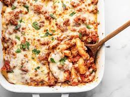

Baked Ziti

This is an italian baked Ziti. It is a delicious meal of an italian descent
Ingredients
- 3/4 pound hot Italian sausage
- 3/4 pound sweet Italian sausage
- 2 table spoons olive oil
- 1 large yellow onion, diced
- 1/2 teaspoon dried oregano
- 1/4 teaspoon dried thyme
- 1/4 teaspoon dried rosemary
- 2 (24 ounce) jars prepared marinara sauce
- 2 cups water
- 1 (16 ounce) package ziti pasta
- 11/2 cups whole-milk ricotta cheese
- 8 ounces mozzarella cheese, cut into small cubes
- 1 cup grated Pecorino Romano cheese
- 1 teaspoon chopped flat-leaf (Italian) parsley
Steps
- Cut down the length of each sausage with a sharp knife. Remove and discard casings
- Heat olive oil in a large saucepan set over high heat. Add sausages and onion. Cook, stirring occasionally and breaking up a spatula, until sausage begins to brown, and onion turns translucent, 5 to 7 minutes. Add oregano, thyme, and rosemary and cook for 1 minute or more. Pour in marinara sauce. Pour 1 cup water into each jar to rinse out the remaining sauce; add to the saucepan. Stir together and bring sauce to a simmer
- Reduce the heat to medium-low, and let simmer, stirring, for 1 hour. Taste for seasoning and adjust if needed. Turn off the heat and reserve until needed. Before using, skim any excess fat that rises to the surface
- While sauce simmers, bring a large pot of generously salted to a boil. Add ziti and cook, stirring occasionally, for 1 to 2 minutes or less than the directions on the package call for, about 8 minutes. Drain and transfer into a large mixing bowl.
- Carefully add the meat sauce and stir until thoroughly combined. Let rest for 5 minutes.
- Meanwhile, preheat the oven to 190 degrees C. Grease a large 9✕13-inch casserole dish with a drizzle of olive oil.
- Use a slotted spoon to transfer half of the pasta and sauce mixture to the prepared dish, then use a spatula to even out into a uniform layer. Top with 1/2 of the ricotta cheese, 1/2 of the mozzarella cheese, and then 1/2 of the grated Pecorino Romano cheese, being sure to distribute evenly. Top with the rest of the pasta and sauce mixture and give the pan a little shake to settle the sauce. Repeat the cheese application
- Bake in the center of the preheated oven until the cheese is melted and the casserole is piping hot, 30 to 35 minutes. remove from the oven and let cool 10 to 15 minutes before serving. Top with parsley
Go to homepage